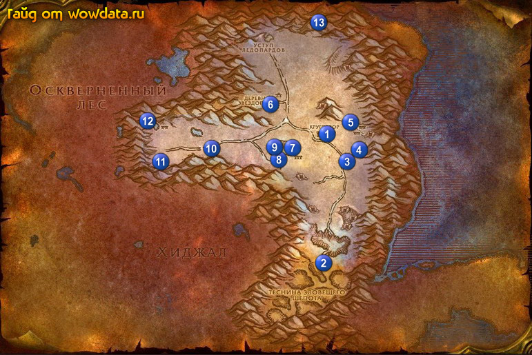

1) Идите в Круговзор 1 и начните <Разъяренные дикосовухи>.
2) Идите в таверну и сделайте этот город вашим домом.
3) Тут же начните <Донесение из Круговзора>, <Герцог Николас Зверенхофф.> и <Сестренка Памела>.
4) Снаружи в противоположной части города от таверны у стены начните <Йети где-то рядом…>.
5) По локации собирайте синие перья валяющиеся на земле, чтобы закончить <Осененные луной дикосовухи>.
6) Бегите на юг 2 (60, 73) чтобы выполнить <Выяснение причин>.
7) Вернитесь к Круговзор.
8) Бейте ети 3 (65, 45) для <Йети где-то рядом…>.
9) Бегите назад в город закончите <Йети где-то рядом…>, начните <Йети где-то рядом…>.
10) Вернитесь на место фарма 3 (65, 45) и бейте Матриарх ледополохов и Патриарх ледополохов для <Йети где-то рядом…> их очень много в пещере 4 (67, 42).
11) Вернитесь в Круговзор 1 закончите <Йети где-то рядом…>, начните <Йети где-то рядом…>.
12) Ищите Легакки к востоку от таверны и начните делать <Йети где-то рядом…>.
13) Идите на восток 5 (66, 34) и бейте мобов из племени зимней спячки для <Боевые действия в деревне Зимней Спячки> и части <Угроза со стороны Зимней Спячки>.
14) Пока вы будете делать эти квесты вы найдете бутылку [Пустая фляга из-под огненной воды] которая начинает <Огненный эликсир Племени Зимней Спячки>.
15) Бегите в 6 (51, 30) закончите <В Зимние Ключи!>, начните <Руины Кел'Терила>.
16) Закончите <Разъяренные дикосовухи> игнорируйте следующую часть. Также тут закончите <Руины Кел'Терила>, начните <Беспокойные духи Кел-Терила>.
17) Соберите реликты для <Беспокойные духи Кел-Терила> : 7 - (55, 42); 8 - (53, 43);
9 – (52, 41); 9 – (50, 41).
18) Идите на запад 10 (39, 43) и бейте мобов из племени зимней спячки для <Угроза со стороны Зимней Спячки>, так же будте уверены что к этому моменту вы насобираете 10 перьев для <Осененные луной дикосовухи>.
19) Идите закончите <Выяснение причин> 11 (31, 45), <Угроза со стороны Зимней Спячки> и <Огненный эликсир Племени Зимней Спячки>, начните <Поддавшиеся порче>.
20) Закончите <Боевые действия в деревне Зимней Спячки> 12 (27, 34).
21) Бегите через туннель в Оскверненный лес.
22) Идите осмотрите лагерь 13 (60, 6) чтобы выполнить и затем закончить <Поддавшиеся порче>, начните <Таинственная слизь> (там котелок использовать нужно, юзается он кстате моментально).
23) Вернитесь по руне в Круговзор 1 и летите в Дарнасс.
24) В Деревня Рут'теран закончите <Осененные луной дикосовухи> (55, 92), начните <В поисках Раншаллы>.
25) Идите в сам Дарнасс, там в башне закончите <Новые границы>, начните <Новые границы>. Идите на 1 этаж, закончите его и начните <Рабин Сатурна>.
26) Летите в Лунная поляна, закончите квест
27) Отправляйтесь в Стальгорн. Убедитесь что у вас есть [Сброшенная кожа черного дракона] (надеюсь вы его не выкинули). Сделайте Стальгорн вашим домом.
28) Закончите <Долгий путь слизнюка>.
29) Начните <Дымящиеся руины Тауриссана>, затем кликните на нее послушайте историю и сдайте квест, начните <Дымящиеся руины Тауриссана>.
30) Напротив мастера грифонов начните <Отвоевание Силитуса>.
31) Летите в Тлеющее ущелье.
32) Бегите на север в Пылающие степи.